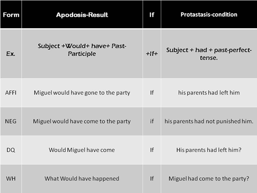

The third conditional structure is simple, is made by "the subject", who is the person or thing we are talking about, next on is the "would have", it means something that could happen, "past-participle",

this is action that could happen, then is the "if", mean what probably happen if the action would been true, the next thing es "had", means the reaction if the condition was true, "past participle", is reaction would have happen, "tense" this is obvious is hte tense of the sentence.